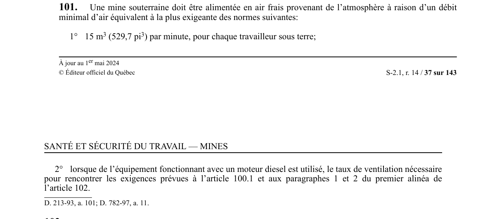

art-101-RSSM : débit minimal d'air frais
Un article du wiki ⚖️ Recueil législatif
En bref
Une mine souterraine doit être alimentée en air frais à raison du débit minimal le plus exigeant entre 15 m³. Cette obligation vise l'employeur.
- Lorsque de l'équipement diesel est utilisé.
- Au moins 15 m³ (529,7 pi³)/min par travailleur sous terre.
- Ou taux exigé à l'art. 100.1.
🌐 LegisQuébec · 📄 PDF officiel
Texte officiel : capture du PDF

Toucher l'image pour l'agrandir🔗 Voir art. 101 RSSM dans le PDF (page 37)
Version : texte officiel du RSSM (RLRQ c. S-2.1, r. 14), à jour au 1er mai 2024 — Éditeur officiel du Québec
Voir aussi
- art. 100 : évacuation gaz échappement bâtiment · obligation : les gaz d'échappement d'un moteur à combustion interne installé dans un bâtiment doivent être dirigés à l'extérieur et la tuyauterie doit être installée de façon à prévenir tout retour ou contamination.
- art. 102 : conditions utilisation moteur diesel souterrain · obligation : tout moteur à combustion interne sous terre doit être de type diesel et son utilisation est soumise à des conditions strictes : dilution des contaminants sous 0,4 mg de carbone total par m³ d'air mesurés selon la méthode NIOSH 5040.
- art. 103 : mesures d'air des moteurs diesels · obligation : le débit d'air alimentant une zone diesel sous terre doit être mesuré et inscrit au registre au moins une fois par semaine.
- ⚖️ Loi habilitante : LSST
- ↑ Index du bloc : Ventilation et qualité de l'air
Pages qui pointent ici (4)
- art-100-RSSM : évacuation gaz échappement bâtiment Recueil législatif
- art-102-RSSM : conditions utilisation moteur diesel souterrain Recueil législatif
- art-103-RSSM : mesures d'air des moteurs diesels Recueil législatif
- RSSM : Ventilation et qualité de l'air (art. 100 à 130) Recueil législatif